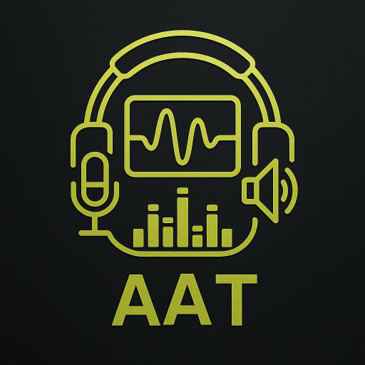
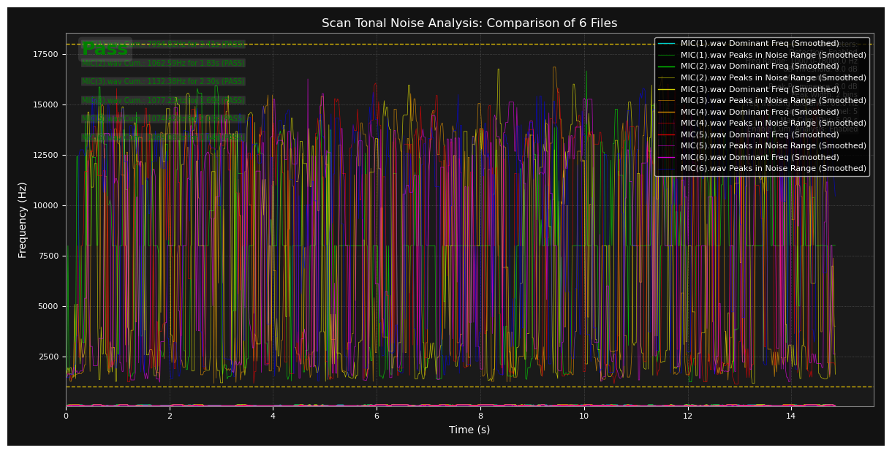
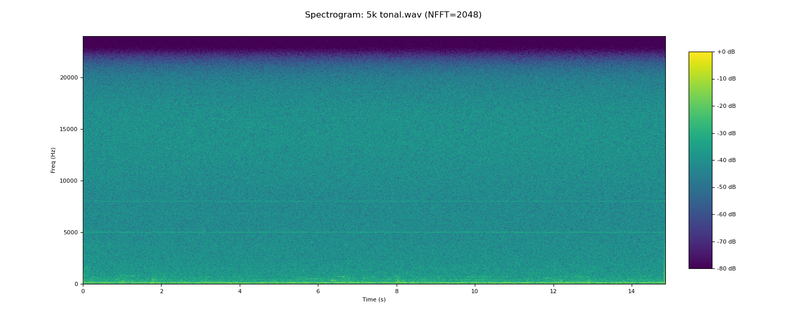
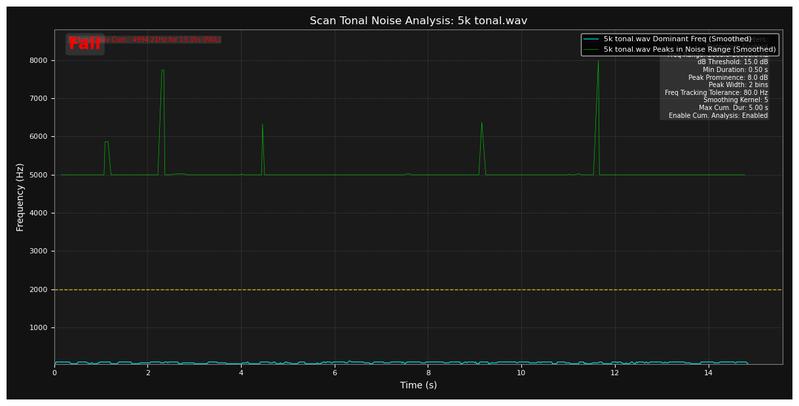
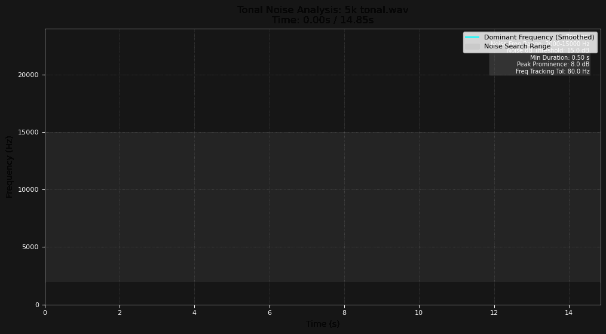
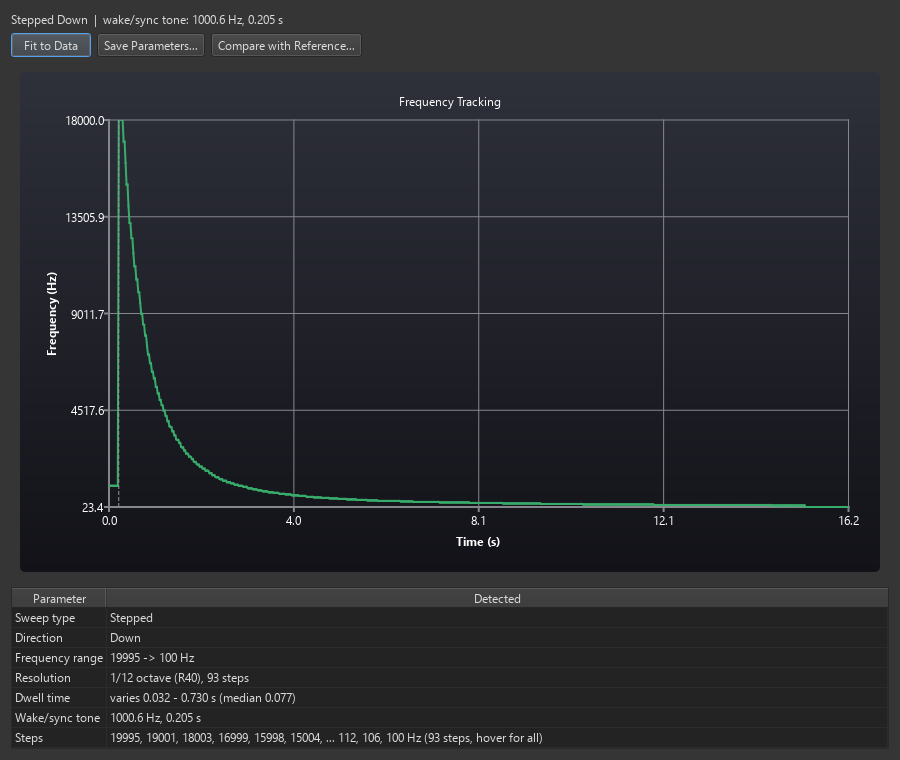
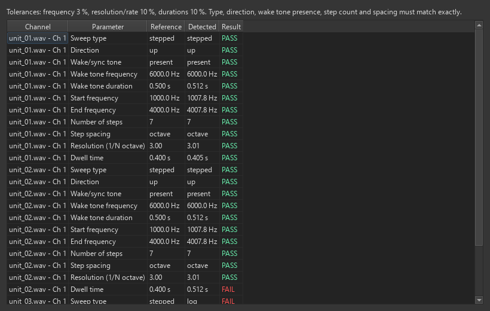
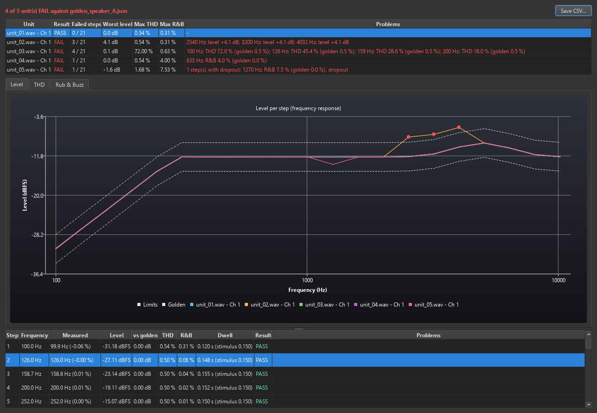
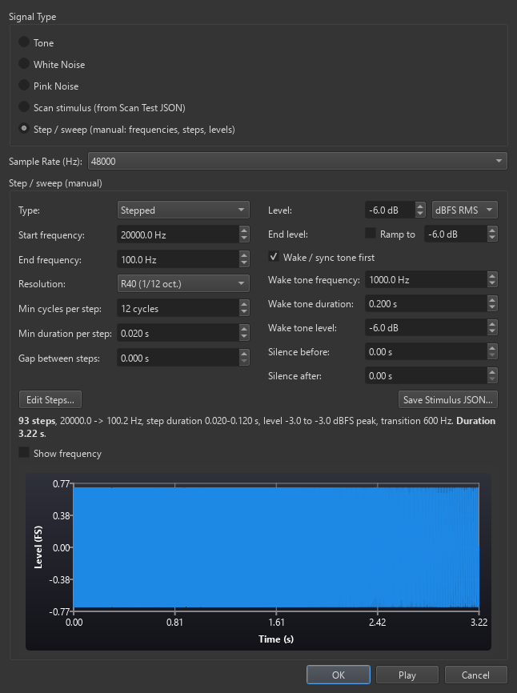

AAT Pro
Professional audio analysis, from the first recording to the PASS/FAIL report. AAT Pro brings a complete acoustic test lab to your Windows PC — spectrum, spectrogram, THD, Rub & Buzz, tonal noise, direction of arrival, noise reduction and one-click PDF reports, all in one window.
Rebuilt from the ground up as a native C++ engine, it opens in seconds, handles long, high-channel-count recordings with ease and runs many analyses in parallel across every CPU core — built for acoustic engineering, product validation and the production line.
Latest version: 1.5.2 · What's new · Version history
Installer
AAT_Pro_Setup_1.5.2.exe · 20.8 MBYou can install software on the PC. Adds Start-menu shortcuts and an uninstaller.
Download installerPortable
AAT_Pro_Portable_1.5.2.zip · 27.6 MBLocked-down PC (no installation, no registry access, no admin rights), or run it from a USB drive. Unzip and run.
Download portableBoth contain exactly the same program — you only need one. All files and release notes are on the GitHub release page; older versions are in the version history. Looking for the original AAT (Windows 32-bit / macOS)? See Classic AAT.

Install
Requires Windows 10 or 11 (64-bit). No separate runtime to install — the Visual C++ runtime and all Qt libraries are included. A sound card, USB audio interface or microphone is only needed for recording.
Option A — Installer
- Double-click AAT_Pro_Setup_1.5.2.exe.
- If Windows shows "Windows protected your PC" (SmartScreen), click More info → Run anyway — the installer is not code-signed.
- Follow the wizard. It installs for the current user only (under %LOCALAPPDATA%\Programs\AAT Pro), so no administrator password is asked for.
- Start AAT Pro from the Start menu or the desktop.
Uninstall: Settings → Apps → Installed apps → AAT Pro → Uninstall, or Uninstall AAT Pro in the Start menu.
Option B — Portable (no installation)
- Copy AAT_Pro_Portable_1.5.2.zip to a folder you can write to — Desktop, Documents or a USB drive. Not C:\Program Files: recordings are saved next to the program.
- Right-click the zip → Extract All…
- Open the extracted folder and double-click AAT_Pro.exe.
Nothing to clean up: the portable version writes nothing to the registry. To remove it, delete the folder.
Where AAT Pro keeps its files
| What | Where |
|---|---|
| Settings, tool parameters, trial / license state | %APPDATA%\AAT\settings.ini |
| Recordings made with Record | the recordings folder next to AAT_Pro.exe |
| User guide | Help → How to Use inside the program, or online |
The installer and the portable version share the same settings.ini for the same Windows user on the same PC.
Getting started in 2 minutes
- Load audio — click Load WAV… or drag a .wav file onto the window. Or choose your microphone under Input device and click Record.
- Pick a channel — use the Channel box (or All Channels). Multi-channel files appear in Loaded Files, one row per channel; tick several to analyse them together.
- Look — the spectrum (top) and waveform (bottom) update immediately. Play plays the selected channel.
- Analyse — open any tool from the Tools menu, e.g. Plot FFT…, Spectrogram, Waveform Statistics or Tonal Teams…. Each tool remembers its settings.
- Save — File → Save WAV…, File → Save Plot to Image…, Edit → Save Data to CSV, or File → Export Report… to put several tools' results into one PDF.
Every menu item and tool is described in the AAT Pro User Guide.
Main features
Everything an audio engineer reaches for — capture, measure, judge and report — in one fast, focused tool.
Capture anything
- Load mono or multi-channel WAV, or record from any input device — even two devices at once
- Realtime Spectrum analyser with live dBA sound-level readout and calibrator support
- Playback with draggable playhead and loop
- Per-file analysis time range and gain — your original file is never touched
- Generate Signal — tones, noise and test stimuli defined like on an audio test system: stepped sweeps (R10–R160 or 1/N octave), log / linear sweeps, dBFS peak or RMS levels with ramps, wake/sync tone, an editable step table, preview and Play
- Merge mono files into multi-channel, or split them back
Measure with precision
- FFT, Spectrogram, 3D Waterfall (CSD) and Histogram views
- Waveform Statistics — peak, RMS, dB SPL, dBA, max RMS dBA and peak dBA for every channel
- Sweep Analysis — THD, Rub & Buzz and level versus frequency
- DOA Analysis (direction of arrival) and Intel Channel Phase for microphone arrays
- Scan Test — identifies the stimulus in a recording and reports its parameters (sweep type, range, R40-style step resolution, dwell, wake tone), across many channels and files in parallel
- Chamber Response and Chamber Isolation
Judge PASS / FAIL automatically
- Tonal Noise — detects and tracks hums, whines and whistles over time, across many channels and files at once, with a PASS/FAIL comparison table
- Tonal Teams — production-style PASS/FAIL check of narrow tonal spikes against each channel's own baseline
- Stimulus Response Test — measures every step of a known stimulus (level, THD, rub & buzz, dropouts, missing steps) and judges each unit against a golden unit
- Overlay all channels view to compare channels or units side by side
- Noise reduction: Spectral Subtraction, Adaptive Noise Cancellation, Extract Audio Difference
Report and design
- Export Report — runs the tools you pick and delivers every result in a single PDF
- CSV export of curves and results for your own pipeline
- Design menu: MEMS microphone, speaker and acoustic design calculators and reference guides
- Unit Converter — dB, distance attenuation, wavelength, mic spacing / aliasing, dBu/dBV and more
Tonal noise analysis
Tonal noise — a steady hum, whine, buzz or whistle concentrated at specific frequencies — is one of the most common reasons a product fails an acoustic test. AAT slices the recording into short spectra, finds peaks that stand out above the neighbouring bands (in the spirit of ISO 1996-1), tracks them over time and decides PASS or FAIL from how loud and how long they last — no one has to listen to every unit.




Screenshots


What's new in 1.5.2
- Scan Test now reads the stimulus for you. For every channel it reports the sweep type (stepped / continuous log / linear / pure tone), direction, frequency range, step resolution (1/N octave, recognised R-series such as R40, or Hz per step), dwell time and the wake/sync tone. A new high-resolution detection even recognises fine stepped stimuli with very short steps (for example R40 from 20 kHz to 100 Hz). Auto-detect or enter the expected stimulus by hand, Save Parameters… to a JSON file, and Compare with Reference… to check other recordings against it — PASS/FAIL per parameter.
- New tool: Stimulus Response Test (Tools → Stimulus Response Test…). Load a recording of a good unit — the stimulus is detected automatically — or a saved golden file, then test your recordings: every step is found and measured (level, THD, rub & buzz, frequency, dwell, dropouts, missing steps) and compared with the golden unit. You get a PASS/FAIL table per unit with the failing steps named, level / THD / R&B charts with the golden tolerance band and failing steps in red, a per-step table and CSV export. Also available in Export Report.
- Generate Signal: design a stimulus like on an audio test system. Stepped sweeps with R10–R160, 1/N octave or Hz-per-step resolution, min cycles and min duration per step, log or linear sweeps, levels in dBFS peak or RMS with an optional ramp, wake/sync tone, gaps and silence, and an editable step table. The window shows step count, transition frequency, total duration and a waveform preview. Save Stimulus JSON… feeds it straight into Scan Test and Stimulus Response Test.
- Play before you save — Generate Signal has a Play button, and can re-create a stimulus from a saved Scan Test parameter file. Its window now resizes and scrolls on small screens.
- User guide: new sections and screenshots for all of the above.




Version history
Every AAT Pro release stays available. Click a version to see what changed and download it.
1.5.2Latest2026-10-29
- Scan Test reports the stimulus parameters (sweep type, direction, range, R-series / 1/N-octave resolution, dwell, wake/sync tone); save them as JSON and compare other recordings against them.
- New Stimulus Response Test: every step measured (level, THD, rub & buzz, frequency, dwell, dropouts, missing steps) with PASS/FAIL against a golden unit; charts, per-step table, CSV and Export Report.
- Generate Signal: manual step / sweep stimulus designer, Play button, re-create a stimulus from Scan Test parameters; resizable window.
- User guide: new sections and screenshots.
1.5.12026-10-29
- Tonal Noise compares several channels and files at once: parallel analysis, comparison table with PASS/FAIL per channel, one chart per channel and an Overlay all channels view. Export Report includes all ticked channels.
- Scan Test checks several channels and files at once: comparison table, one chart per channel and an Overlay all channels view.
- Tonal Teams verdict now uses exactly the points drawn on the chart (no more red markers with a PASS result); new Top Fails Min Spacing setting (default 100 Hz).
- When the trial has ended, the program asks for the license key at start-up instead of closing.
- User guide: new multi-channel screenshots.
1.5.02026-10-29
- Free trial extended to one year (365 days).
- Portable version — runs without installation on locked-down PCs.
- The Visual C++ runtime is now included, so AAT Pro runs on PCs where it was never installed (previously "msvcp140.dll is missing").
- Tonal Teams results are interactive: hover readout, zoom, log frequency axis, Reset Zoom and an Overlay all channels view.
- All charts: hold the right mouse button and drag to move the view.
- Faster display of many-channel files (narrow spectrum peaks are kept); faster Histogram and DOA on multi-channel data.
- Apply to all loaded files for time range and gain now leaves every file unchanged if one of them cannot take the setting.
- Much more detailed user guide, with a complete table of contents.
Earlier, pre-Pro versions of AAT (Windows 32-bit and macOS) are on the Classic AAT page. All files: GitHub releases.
Free trial and license
AAT Pro is free to use for 365 days from the first time it is started on a PC. The days remaining are shown in Help → About AAT Pro and in the log (Edit → View Log…).
Enter a license key
Request a key (see Support) and enter it via Help → Enter License Key while the trial is still running. The dialog tells you immediately whether the key is valid and until when. The key is remembered, so you only enter it once.
Trial already ended?
When you start AAT Pro, an Evaluation Period Ended message appears. Click Enter License Key…, paste your key and click Activate — the program then opens normally and remembers the key. (Click Exit to close it instead.)
Troubleshooting
| Problem | What to do |
|---|---|
| "Windows protected your PC" when starting the installer or the program | The files are not code-signed. Click More info → Run anyway. |
| Portable version does not start, or recordings fail to save | Make sure the folder was fully extracted (not run from inside the zip) and is somewhere you can write to, e.g. Desktop or Documents. |
| No input device / no sound | Connect the device first, then Tools → Refresh Audio Devices. Check Windows sound settings and microphone privacy permissions. |
| Charts are slow with many channels | Normal for very long recordings with many channels; select fewer channels or set a shorter Select Time Range…. |
| "Evaluation Period Ended" | See Trial already ended? above. |
File checksums (SHA-256)
To confirm a download is complete and unchanged, run Get-FileHash .\AAT_Pro_Setup_1.5.2.exe in PowerShell and compare:
AAT_Pro_Setup_1.5.2.exe 9B9F5DBE755BD2B74BA6DDB58A3BD77FD785A26D552B4A3E0860F311419DFFE5 AAT_Pro_Portable_1.5.2.zip F774E3F867AD2070D5E830B1329D71AB076C1336AC53694DDD412C16D494392C
Support
For a license key, questions or bug reports, contact Renee at reneeaat@gmail.com. When reporting a problem, please include the AAT Pro version (Help → About AAT Pro) and, if possible, the log (Edit → Save All Logs to File…).
Support the development
Developing software like AAT Pro takes significant time and dedication. If you find it useful, please consider a donation — it helps the author keep improving the tool, adding features and providing maintenance. If you are unable or prefer not to donate, that's completely okay: contact the author and, after communication, a license can be provided for free.